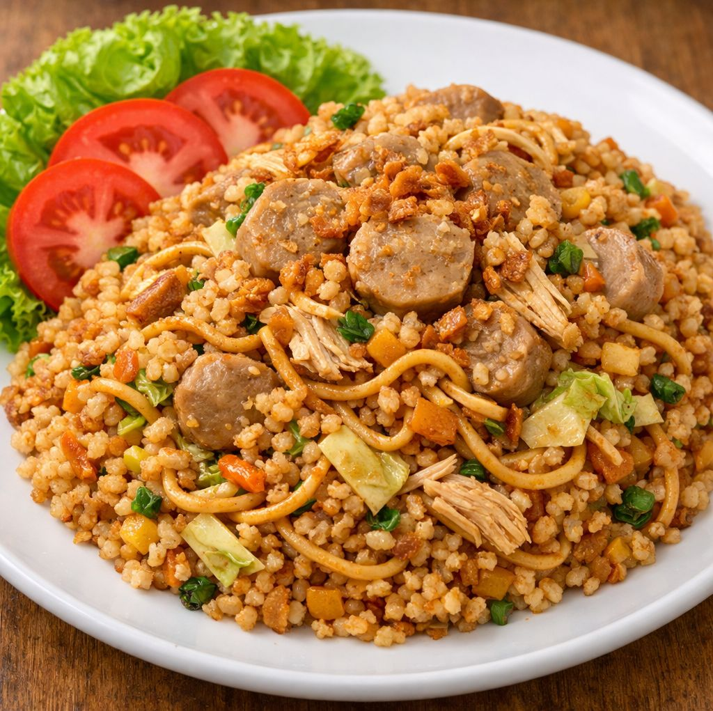

Resep Nasi Goreng Mawut (Magelangan) Komplit: Ayam, Bakso, Sosis – Kenyang dan Nagih!
Pernahkah Anda merasa bingung saat ingin sarapan atau makan malam, harus memilih antara nasi goreng atau mie goreng? Rasanya kedua-duanya menggoda. Jika Anda pernah mengalami dilema ini, ada satu solusi kuliner yang legendaris dari tanah Jawa: Nasi Goreng Mawut, atau yang sering disebut Magelangan.

Sesuai namanya, "mawut" dalam bahasa Jawa berarti campur aduk atau tumpah melimpah. Namun, di dunia kuliner, istilah ini justru merepresentasikan keharmonisan rasa yang sempurna. Perpaduan kenyalnya mie goreng dengan gurihnya nasi goreng, dicampur dengan berbagai topping komplit seperti ayam suwir, bakso, sosis, kol renyah, dan telur orak-arik.
Kali ini, kita akan membuat Resep Nasi Goreng Mawut Komplit ala rumahan yang pastinya bikin keluarga ketagihan. Simak resepnya di bawah ini!
Nasi Goreng Mawut ( Magelangan )
Bahan-Bahan
Bahan Utama:
- Nasi putih: 2 piring (sebaiknya nasi pera atau nasi semalam agar teksturnya tidak lembek)
- Mie telur kering: 1 bungkus (rebus setengah matang, tiriskan, dan beri sedikit minyak agar tidak lengket)
Protein & Isian Komplit:
- Dada ayam: 100 gram (rebus, suwir-suwir kecil)
- Bakso sapi: 3-4 buah (potong menjadi 4 bagian)
- Sosis sapi: 2 buah (iris serong)
- Telur ayam: 2 butir (kocok lepas untuk orak-arik)
Sayuran:
- Kol: 3-4 lembar (iris kasar tipis)
- Daun bawang: 1 batang (iris halus untuk taburan)
- (Opsional: Sedikit sawi jika suka)
Bumbu Halus:
- Bawang merah: 4 siung
- Bawang putih: 3 siung
- Cabai merah keriting: 3 buah (sesuaikan selera pedas)
- Cabai rawit: 2 buah (optional, jika suka pedas nendang)
- Kemiri: 1 butir (sangrai dulu)
Bumbu Penyedap & Seasoning:
- Kecap manis: 3-4 sendok makan (sesuaikan selera manis)
- Saus tiram: 1 sendok makan
- Garam: secukupnya
- Lada bubuk: secukupnya
- Kaldu ayam bubuk: secukupnya
- Minyak goreng: secukupnya untuk menumis
Cara Membuat Nasi Goreng Mawut
-
Persiapan Bumbu:
Haluskan bawang merah, bawang putih, cabai, dan kemiri menggunakan ulekan atau blender. Jangan terlalu halus, kasar sedikit lebih enak agar tekstur bumbunya terasa. -
Buat Telur Orak-arik:
Panaskan sedikit minyak di wajan. Tuang kocokan telur, buat orak-arik hingga matang tapi tidak terlalu kering. Sisihkan telur di pinggir wajan atau angkat sejenak. -
Tumis Bumbu Harum:
Tambahkan sedikit minyak lagi jika wajan kering. Tumis bumbu halus hingga harum dan matang sempurna (warnanya berubah sedikit kecokelatan). -
Masukkan Protein:
Masukkan potongan bakso dan sosis ke dalam tumisan bumbu. Aduk rata hingga sosis berubah warna dan bakso matang. Lanjutkan dengan memasukkan ayam suwir, aduk hingga tercampur bumbu. -
Campur Nasi dan Mie:
Masukkan nasi putih dan mie yang sudah direbus ke dalam wajan. Aduk-aduk dengan api besar agar bumbu meresap sempurna ke dalam serat nasi dan mie. Pastikan mie dan nasi tercampur rata (mawut). -
Bumbui & Tambah Sayur:
Tambahkan kecap manis, saus tiram, garam, lada, dan kaldu bubuk. Aduk rata hingga warna nasi menjadi kecokelatan secara merata.
Masukkan irisan kol dan telur orak-arik tadi. Aduk sebentar saja (jangan terlalu lama) agar kol tetap renyah crunchy dan segar. -
Penyelesaian & Penyajian:
Cek rasa. Jika sudah pas, matikan api. Taburkan irisan daun bawang untuk aroma yang lebih segar. -
Sajikan:
Pindahkan Nasi Goreng Mawut ke piring saji. Tambahkan kerupuk, acar, dan irisan tomat/mentimun sebagai pelengkap. Nikmati selagi hangat!
Tips Memasak Nasi Goreng Mawut Anti Gagal
- Jangan Pakai Nasi Baru: Kunci nasi goreng yang enak adalah menggunakan nasi dingin atau nasi semalam. Nasi baru yang masih hangat dan mengandung banyak air akan membuat nasi goreng jadi lembek.
- Api Besar: Saat mengaduk nasi dan mie, gunakan api besar. Teknik ini disebut stir-frying yang akan membuat aroma wangi khas nasi goreng (wok hei) muncul dan mencegah nasi menjadi lembek karena terlalu lama di wajan.
- Jangan Overcook Mie: Rebus mie hanya sampai setengah matang saat persiapan, karena nanti mie akan dimasak lagi di wajan bersama nasi. Carilah mie yang kenyal, namun bukan yang terlalu keras atau mudah putus.
- Kestabilan Warna: Kecap manis adalah kunci warna cokelat mengkilap. Tambahkan sedikit demi sedikit sambil diaduk agar warnanya pas dan tidak terlalu gelap atau hitam.
Itulah resep Nasi Goreng Mawut (Magelangan) Komplit yang bisa Anda coba di rumah. Dengan kombinasi karbohidrat ganda (nasi dan mie) serta topping protein yang melimpah, satu piring saja sudah cukup membuat Anda kenyang seharian!
Selamat mencoba, dan jangan lupa bagikan hasil masakan Anda ke family. Happy cooking!